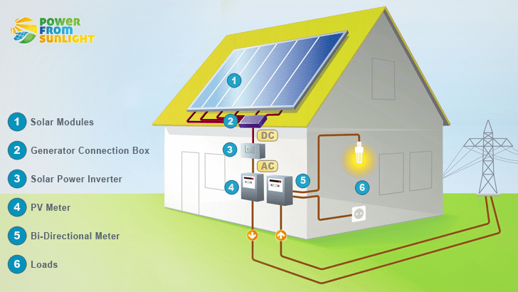

+380977355228
+380977355228
Электрический счетчик в Вашем доме воспринимает протекающий через него ток и сохраняет значение общего потребления в соответствии с сетевым потоком тока. Он будет работать в прямом направлении, независимо от того, происходит экспорт или происходит импорт.
Для прибыльного функционирования Вашей солнечной электростанции, нужно также двунаправленный счетчик. Двунаправленный измеритель измеряет направление потока тока и сохраняет данные в отдельном регистре. В дневное время большая часть нагрузок находится в выключенном состоянии, и избыточная энергия, генерируемая солнечной системой, отправляется в общую сеть (экспорт). В этот момент направление потока тока обратное и счетчик сохраняет данные в регистре экспорта. В ночное время нет солнечной генерации, и электричество импортируется из сетки для запуска нагрузки. Направление потока тока счетчик сохраняет данные в регистре импорта.
Net-Metering – это механизм выставления счетов, который позволяет собственникам генерирующих установок электрических сетей подавать электроэнергию, которую они не используют обратно в сеть. Для этого требуется цифровой двунаправленный счетчик, который работает в обоих направлениях для размещения электроэнергии, вырабатываемой на ее солнечной установке.
Что касается выбора конкретного счетчика, то это касается конкретного Обленерго. Если Вы нуждаетесь в выборе счетчика для учета электроэнергии по «зеленому тарифу», то Вам необходимо:
Надежная работа солнечной электростанции также основана на закреплении солнечной панели на интересующей Вас поверхности. При этом все станции и крепления можно условно разделить на: стационарные накрышные, стационарные наземные, трекерные (вращающиеся).
Для закрепления панелей на крыше можно использовать разного рода материал, но наилучшими характеристиками пользуется анодированный алюминий. Такой материал отличается высокой прочностью и длительным периодом эксплуатации. Можно использовать также оцинкованный метал. В любом случае, если Вы крепите панели либо на крыше, либо на земле, это должен быть материал, который отличается прочностью и устойчивостью к коррозии. .
Сама система креплений состоит из:
Если же речь идет о наземной конструкции, то можно использовать готовые конструкции – столы для размещения солнечных модулей, которые отличаются объемом проектированной станции (в зависимости от количества панелей и угла наклона).